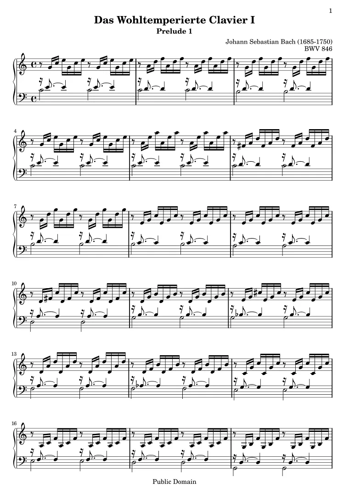
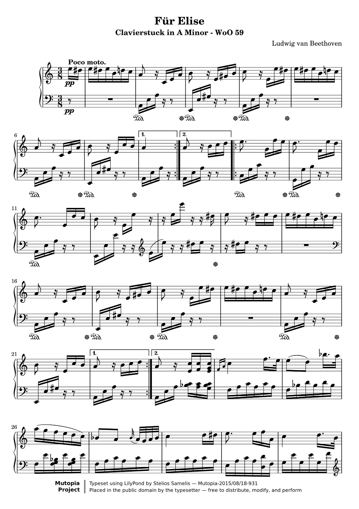
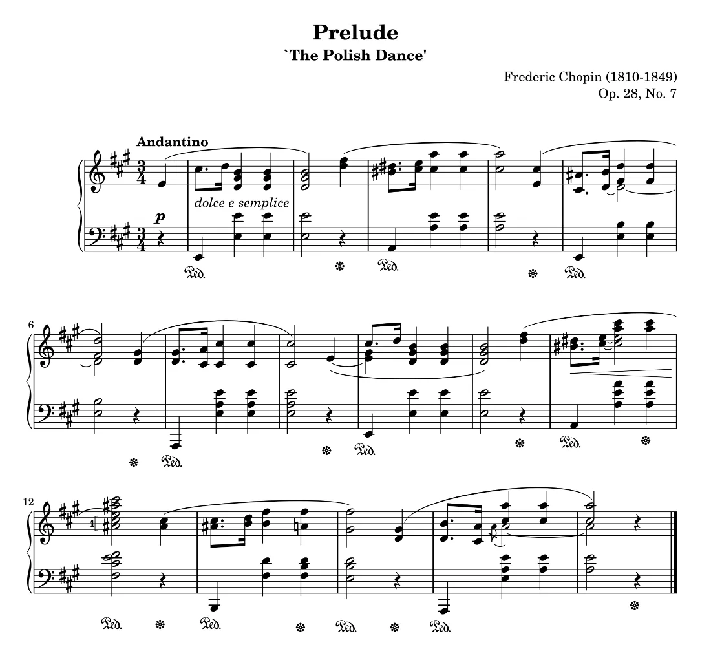

纸上的谱Für Elise · p.1
MIDI右手 · 左手 两条轨
乐谱转 MIDI
拍一张谱，得到一份 MIDI
照片、扫描图或整份 PDF 逐行识别成数字谱，再导出右手、左手两条轨的 MIDI 文件。

轨 1 · 右手轨 2 · 左手
肖邦《A 大调前奏曲》Op.28 No.7 · 1 页 · 3 行 · 16 小节
- 照片、图片、PDF单个 PDF 最多 50 MB、200 页
- 每行识别两次独立复读核对，漏检的行可以手动补框
- 1,313 个音符《野蜂飞舞》7 页 PDF，全部音高与原谱复核一致
识谱过程为演示动画；音符取自乐谱曲库中这首曲子的数字谱，下载的 MIDI 是真实文件。图片 / PDF 识谱在本机版和账号版中提供。
MusicXML 转 MIDI
MusicXML 拖进来，MIDI 拿走
就在这个页面里转换，文件不会离开你的浏览器。钢琴的上下两个谱表分成两条 MIDI 轨。
在线跟随播放
播放到哪，谱就亮到哪
逐音高亮、自动翻行；点任意一个音，就从那里开始。速度 20–300 BPM，播放中改速不丢拍位。
欢乐颂贝多芬 曲 · 主题 16 小节
打开就能用
网页版支持 MusicXML / MXL / MIDI 导入、跟随播放、变速与分手练习，并可导出 MIDI、MusicXML 和 PDF。
在线打开乐谱